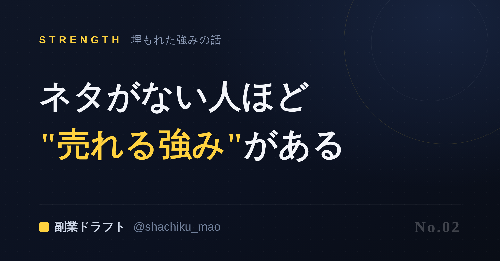
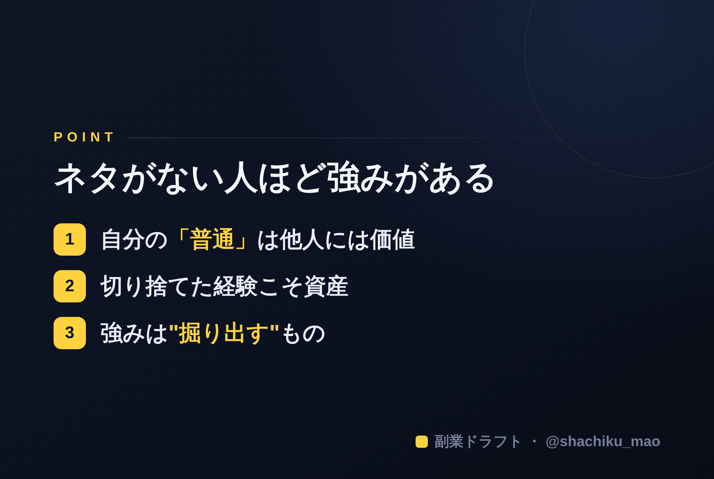

1. 「タイトルをコピー」→ note のタイトル欄に貼る
2. オレンジのラベルの画像（見出し画像）を note の見出し画像に設定
3. 「本文1をコピー」→ note本文に貼る
4. 青いラベルの位置（本文の途中）に、同じ名前の画像をアップして挿入
5. 「本文2をコピー」→ 続きを貼る
※ 見出しが普通の文字になったら、その行を選んで「大見出し」に設定してください

「発信したいけど、ネタがない」 「自分には語れることなんてない」
そう思っている人ほど、実は"売れる強み"を持っている——これは皮肉でも慰めでもなく、私が多くの人の発信を見てきて確信していることです。
なぜ「ネタがない」と感じるのか
理由はシンプルで、強みが"自分の中で当たり前になっている"からです。
毎日使っているスキル、無意識にやっている工夫、何度も人に説明してきたこと。それらはあなたにとって空気のように自然で、「わざわざ発信するほどのことじゃない」と感じてしまう。
でも、思い出してください。あなたが「当たり前」と思っていることを、まだ知らない人が世の中には山ほどいます。 その人たちにとって、あなたの当たり前は"知りたかった答え"なのです。
「価値がない」と切り捨てているものリスト
発信ネタがないと言う人に話を聞くと、だいたい次のような"宝"を自分で捨てています。
- 前職・現職の知識（「業界では常識」＝業界外には貴重）
- 失敗と、そこから学んだこと（成功談より共感され、信頼される）
- 趣味で積み上げた詳しさ（好きだから続く＝最強の発信テーマ）
- 人からよく聞かれる質問（需要がある証拠）
これらは「ネタがない」の正体が、ネタの不在ではなく、"価値の見落とし"であることを示しています。
強みは「掘り出す」もの
大事なのは、強みは頭で考えて"ひねり出す"ものではないということ。質問に答えていくうちに、勝手に浮かび上がってくるものです。
「最近感謝されたことは？」「人によく相談されることは？」「時間を忘れて調べてしまうことは？」——こうした問いに一つずつ答えるだけで、「あ、これなら話せる」が次々と出てきます。
「ネタがない」のではなく、「まだ言葉にしていないだけ」。順番はいつも、"発掘"が先で"発信"は後です。

もし「自分の強みを掘り出すのが難しい」と感じたら、AIが質問であなたの強みを引き出し、Threads・X・Instagram・noteの下書きまで一気に作ってくれる 「副業ドラフト」 を使ってみてください。無料で試せます。
👉 https://note-threadssf.onrender.com
ネタは、探すものではなく、引き出すもの。あなたの中に、もうあります。